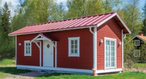
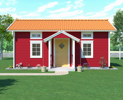
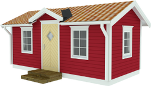
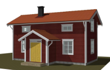
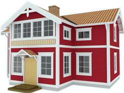

Dalastil byggd med moderna väggblock.
Med fönster från Tomoku Hus för perfekt harmoni.
Hantverk, tradition och kvalitet
I Sverige finns det mångåriga traditioner att bygga hus och stilen varierar beroende på var i landet man befinner sig. Kunskapen att bygga hus har gått i arv från generation till generation. Husen utformades och byggdes på platser utifrån kunskaper och erfarenheter som äldre tiders generationer skaffat sig.
Lika viktig som husets interiör var husets exteriör. Husets ingång fick ofta en omsorgsfull utformning med proportionellt byggda förstukvistar eller verandor. En annan viktig detalj var fönstrens placering på huset. Fönstrens uppgift var att skänka ljus till rummen men också att ge fasaden harmoni och symmetri. Fönstren benämndes därför för husets ”ögon”.
På Tomoku Hus värnar vi om vår tradition i Sverige att bygga praktiska och snygga hus som hela familjen älskar att bo i.
Energisparande och klimatsmart
Husen konstrueras och byggs med våra egna väggblock och fönster. Vi följer förstås dagens moderna normer vad gäller isolering och täthet vilket bidrar till ett miljövänligt och energisnålt hus. I serien Dalecarlian Classic Homes har vi ritat tre huvudtyper av hus som inom sin egen stil kan varieras. Dessa har sitt ursprung i de gamla hustyperna parstuga, korsplanshus och salsbyggnad.
Alla hustyperna har som standard två våningar. Den nedre våningen har en tilltagen takhöjd på 2700 mm vilket ger en skön känsla av rymd. Fönstren kan göras höga och med tidsenlig inramning. Det går att välja mellan öppna eller inbyggda verandor på över och undervåningen. Gavelspetsarna är isolerade även om det är kallvind. En speciell detalj på våra hus är att gavelspetsarna är försedda med utstickande gavelåsar vilket ger möjlighet att ändra riktning på takvirket från gavel till långsida.
Omfattande Projektstöd
På Tomoku Hus köper du inte bara ett hus. Du får ett genomtänkt, modernt hem, som har planerats med omsorg efter just dina behov och krav.
Vi lägger stort värde på att ha en kontinuerlig process i planeringen där dina önskemål går in från början till slut. För att underlätta planeringen och att hitta bra lösningar kan vi erbjuda visualisering på hur just ditt hus kommer att se ut, t.o.m. "på plats med rätt utsikt".
Vår stora erfarenhet av realiserade husprojekt över hela Norden samt i Japan (som har liknande klimat som vi har i Sverige), ger dig trygghet att hitta en lösning som funkar och klarar såväl vinterkyla som sommarvärme lika bra.
Väggblocken finns i olika tjocklekar, isolerade eller oisolerade. Väggblocken finns med eller utan monterade fönster/fönsterdörrar. Läs mer om Tomoku Hus väggblock här.
Snabbt under tak
Lättmonterade väggblock från Tomoku Hus förenklar byggandet och logistiken tack vare färdigisolerade block. Även inköp och transport av material reduceras betydligt med en leverantör.
Väggblocken finns i många olika dimensioner beroende på vilket hus du vill bygga. Vad alla har gemensamt är att det är lätt och smidigt att sätta upp dem, oavsett om du bygger ett hem till familjen, en friggebod eller en stor maskinhall. Du kan själv välja entreprenadfirma och även göra mycket själv om du vill. Tydliga instruktioner medföljer och blocken levereras med nummer som visar placeringen i enlighet med vår specifikationsritning. Och så är vi på plats under uppstarten för att ge råd och tips!
Att bygga med småblock från Tomoku Hus ger ett flexibelt och snabbt byggnadssätt samt en mycket stabil stomme. Våra småhus som t.ex. Lilla Tunsta kan både levereras som byggsats eller färdigmonterade till din tomt.
Tomoku Hus modeller (urval) i överblick
| Modellbild | Namn | Boyta | Takhöjd nedre |
|---|---|---|---|
|  |
30 m2 |
3,30m / 2,12m |
|
|  |
24 m2 |
3,30m / 2,12m |
|
|  |
Lilla Tunsta
|
15 m2 |
1,97-2,32 m |
|  |
Sommar Tunsta
|
95 m2 |
2,7m |
|  |
Lilla Gården
|
136 m2 |
2,7m |
Våra planritningar och broschyrer är i formatet PDF. Om du inte har någon PDF läsare installerad (Mac OS X öppnar PDF med Preview), kan du hämta Acrobat Reader gratis från Adobe.